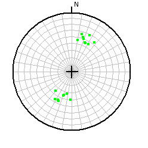
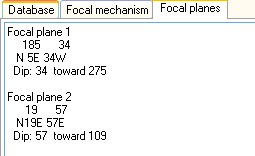
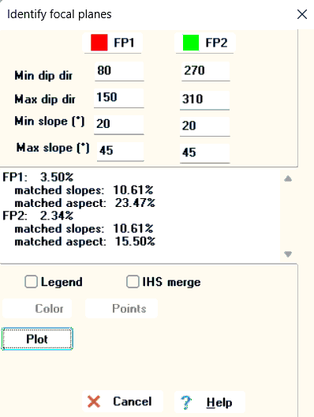
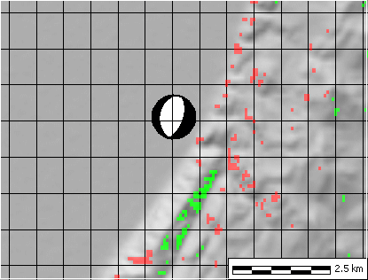

Geology options
and pick Focal Plane Analysis
Geology options
and pick Focal Plane Analysis
|
 |
If you have a number of earthquakes, a plot of the
dip directions on the focal planes can
help you see the trends more easily than using the great circles. This will be color coded by the
earthquake type. In this case there appear to be two clusters,
probably related to the two focal planes for a single family of normal
faults. If you Adjust net properties to put on a polar grid, you can easily determine the range of dip directions for each potential focal plane, as well as the dips. You could alternatively get a rose diagram with the dip directions. |
|
 |
The
Global (Harvard) CMT database contains the two focal planes in the right hand
rule format, with two numbers. The first is the strike, and the
second is the dip. The dip direction is 90º
to the right (clockwise) from the strike. The record display
option will show the planes in two additional formats, the traditional
strike and dip, and the dip and direction for the pole (normal) to the
fault plane. The two focal planes for this fault have nearly the same strike (N5E and N19E), with is common for thrust and normal faults. One focal plane dips 34 to the W, and the other dips 57 toward the E. |
|
 |
You should do this analysis on a grayscale
reflectance map so the colors for the focal planes stand out. You can do this for a single earthquake, or a number of earthquakes in a small region which share the same approximate orientation. Get the potential focal planes from the CMT database record display. This example is for the single quake with the earthquake with the focal mechanim below, whose strikes are about N20E.
Pick the plot button. The map shows the matching locations, and the memo box shows the percentage of points that matched your criteria. Iterate until you have a good result. OK or Cancel leaves this form. |
|
 |
Matches for the two focal planes. You might want to increase
the values allowed to see more potential areas. This is a range front fault in the Great Basin of the western US. Additional analysis of this fault scarp. |
The dip directions used to compute this option are the same as shown on Aspect maps.
Last revision 11/8/2022